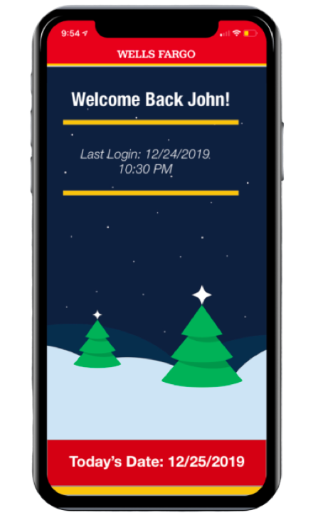
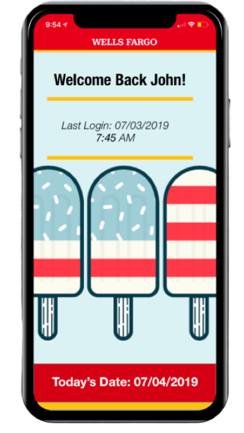
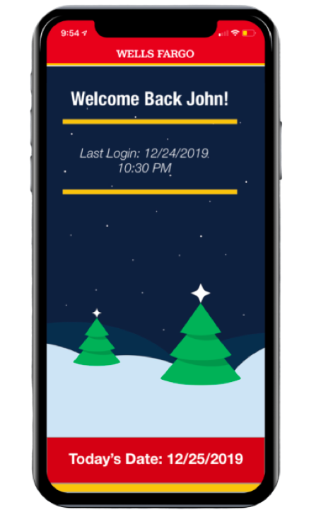
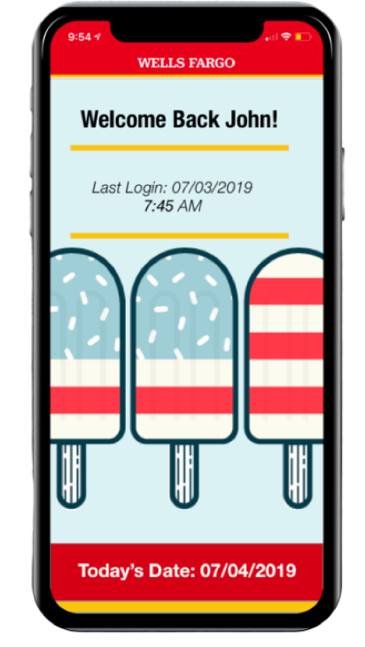

A personal project of mine after being frustrated with the WF app, as a trusted customer for 5 years.
Mobile banking is nothing short of a life saver – in fact, I can’t even fathom how I survived before not knowing how much money was on my debit card, and if the funds available were sufficient for the meal I was about to purchase. That unease as the card enters the machine was dispelled with the introduction of mobile banking apps that quickly let you see your balance and your previous transactions, yet the UX of these mobile apps leaves a lot to be desired.
Focus: Redesign the User Interface of the Wells Fargo Mobile Banking app to be more user intuitive and easier to navigate.
Role: User Experience Designer, User Experience Researcher
Timeline: Two Weeks
Deliverables: New Navigation Bar
My first method of finding pain points was to use a database of user reviews – the app store. From there I took negative reviews and attempted to find patterns in what end users were reporting. Some of the most common types of problems included:
From here I wanted to group this user feedback into three main archetypes of problem to make it easy going forward:
Unitutive User Interface:
Functionality Issues:
Features that need to be Added:
Through this I was able to get a general idea of some of the pain points that the app was facing but I wanted to collect some first-hand data to further narrow down the vaguer archetypes into fixable problems. To do this I conducted guerilla usability tests on the Campus of UCSD in La Jolla, CA. It is important to note the implicit assumptions that come with testing the usability of an application in a location such as UCSD – the general population being tested were those that were on campus of a university, and thus it is inferred that they are generally not the “average” person.
Next, I created a test of some of the basic functionalities of the application that came up in the user ratings analysis, and tried to increase the difficulty of the navigations as test progresses:
Easy:
1. Sign Out of the Application - Important to note that the sign out button on the main account summary page is blocked by the iPhone X+ home bar, this is a design flaw that allowed those familiar with the app to be much faster in this action
2. Navigation to Past Transactions
3. Navigating to Past Deposits - Important to note that deposits is located next to transactions, so an observant user theoretically should take less time after action #2
Medium:
4. Navigating to the bank statements page
5. Navigating to the Update Contact Information Page
6. Navigating to the Card Security page and initiating a blockage of a card
7. Make a money transfer - Multiple ways to do this, through main page or from side menus, making it hard to understand the differences, which leads the user to believe there is a difference, when there is not.
Hard:
8. Make an Appointment through the application with customer service a. Very obscure feature that is hidden away
9. Dispute a Transaction
10. Order Foreign Currency
I used this testing method against 15 distinct users, attempting to create a representation of a greater population by testing different age groups and genders. I then recorded the amount of time it took them to do this navigation task and recorded it in a table. It is important to note that 6 of these 15 users were Wells Fargo customers, and therefore had been exposed to the app before, they have been bolded in the table. For transparencies sake, I attempted to test over 60 users, but was declined by most of them.
Here are the Results, all numbers are in seconds (Disclaimer: Human Error of using stopwatch on iPhone was present in all action runs):

From the guerilla usability testing it was obvious that there were clear issues with the intuitiveness of the navigation. Although there is always going to be outside influence, such as if the user was a previous customer of Wells Fargo or not, and how familiar they were with the app, but there were glaring moments of confusion when conducting the tests themselves. From the follow up questions that I asked of the user’s experiences, especially the ones that were not Wells Fargo customers, stated that the duel navigation bar system was confusing to understand, especially because there were repeated components, such as “Control Tower”.
Furthermore, the amount of information hidden in each drop down was far too large, so that they could not remember where things were even if they were in the same drop-down group as the previous action. This could be an indication on the level of memory retention that is needed just to use basic functionalities, a high average amount of memory retention needed usually creates an application that is too hard to use for the average person. It is important to note that the time in seconds also accounts for the loading time between navigation screens, which was quite high.
From this I was able to create 2 sample personas of people who would use this app, and the problems that they face.
Sample Persona 1: User of App, but doesn’t understand deep Functionalities
This type of user can understand the basic functions of the app, such as checking the limit and the past transactions, but cannot fulfill the full functionalities of the app that mirrors the website. This type of personality is evidently very common, as many types of complaints in the iOS reviews of the WF app were about features that actually exists . This shows that the users were not able to locate the features to the point that they complain it does not exist.
Sample Persona 2: User of App, has trouble with basic functionalities
This type of user has troubles with even the basic functionalities of the app, and finds it frustrating to use. He often forgets how to use the features that he found out how to use in his previous attempt and does not like how he has to relearn the app every time he starts it up. Finds the navigation system unintuitive and needs a more concise way to get through the app.
Navigation:Navigation: The Navigation of the app is sorely misused with 2 navigation bars, with one on each side. The navigation bars have overlapping components which raises the question of if it can be condensed into one navigation bar. However, there is also the problem of having too much information in the drop down of each grouping already, so the solution needs to address both.
Overall Clutter and Look of the App:There are too many moving parts (ads), while also having too many buttons and tabs on the home page, showing that it was just ported from a website, rather than designed solely for iOS.
The main thing I wanted to emphasize in the sketches was the abandoning of the two overlapping navigation bars that were hard to use, and most of all not visually appealing when layered over the screen that was currently being looked at.

This first sketch shows the “Profile” Page, which is a condensed version of the elements from the left navigation bar. The main points to highlight are the card system being used for each section which allows a sense of fluidity and user customization, two aspects that usually boost user satisfaction. The ads that were normally on the main page is now moved to this less important profile page, in a way that is less obtrusive. Also pictured is a new dynamic welcome screen that responds to the time of the year, and therefore is a little less repetitive.

This is the redesigned home page, which uses the right navigation bar and uses those card elements to form each subset. Another important aspect that I highlighted was that each card can use the 3-D touch element to show a preview of the card. This is shown in the figure in the top right, while the bottom left shows the more detailed card that expands when the card is clicked. One of the main problems that was highlighted in the performance of the application was the amount of time it takes between menus, and the way to change this is to have the cards all loaded natively on one page, this way when the card expands it was pre-loaded when the initial page loads rather than when each page is clicked on, which causes lag.
By having one home menu with all the card elements being presented, it is less likely that features go unused and ignored, people are more likely to click on the card if it’s on the menu than if its hidden in a menu. One last feature I wanted to introduce was a native night-mode for easier viewing at night, something that is a must with iOS 13.
Another possible solution would be to have a static navigation bar with 5 subsection quick navigation points for 5 individual cards, and to keep the sign out button at the top. This would condense even the 2 pages into one, and keep it as simple as possible for the user while maintaining aesthetic qualities.
I mapped the information architecture and how the app would flow with this low fidelity wireframe, the app starts with a login, following by a welcome page, which then leads to the two main navigation pages, and the subdivisions that are by each card, although a preview would be shown by 3-D Touch.
I used figma to create some high-fidelity prototypes of what it would look like, using the low fidelity sketches as a point of reference.
Home and navigation Page:
The main aspect that I wanted to focus on was the home page of the application. Currently, it shows a preview of the account summary, some promoted quick functionalities, and a carousel of ads that take up the greatest portion of the screen. This is not an efficient use of space, and also one that frustrates customers, as shown by the user reviews that stated that they did not like the ads.
Before:
Note that the sign off button is covered in the home page on the left, as well as the large obtrusive ad in the center of the screen. The typography on the bottom text is poor, as it takes some effort to read, perhaps this was done on purpose so that most people would not read it, but this is poor practice.
New Condensed Card Format:
My idea was to use cards that take the navigation subheadings from the previous right bar and merge them into a “home” page. The bottom navigation bar would quick jump to the main subsections, and the functionalities are shown on the preview of the card as well as important functions for quick use. It is important to note that these subsects are not arbitrary, but grouped with consideration to the online banking website, and the mobile applications pre-existing subsects. The cards are used to organize the information and functionalities below them and provides a neater way to access the many functionalities of this app while making it more displayable.
Another aspect that I added was more icons displaying the functionalities that make the app more intuitive and easier to navigate. In an app like Wells Fargo, where there is a tremendous amount of capabilities, the need for icons becomes paramount. The amount of information that the user must retain and the icons and symbols helping them out should be parallel, so that the user does not have to relearn the application every time it is used.
The following screenshots show the 3-D touch compatibility, as well as the detailed card that is triggered when fully clicking one of the cards. The account summary page is divided into 3 main sections: transactions, deposits, and cash-free atm, and is shown by the highlighting off the top 3 headers. Clicking on a transaction would highlight it, and show more in-depth analysis of the transaction, as well as an option to dispute it, a function that is not available in the base-app, yet something that would be very useful, as determined by user ratings research.

The 3-D Touch expands the card preview into a bigger look at the subsect while not navigating away from the main page. This is important because the performance of the app at its base was poor, with long load times between pages, as shown by the amount of time it took users to conduct basic functionalities in the guerrilla usability testing. By having a 3-D Touch preview, new users can tour the app without having to leave the essential pages. It also provides a bigger look into the core functionalities of each subsect, which allows quick use.

The more detailed card is triggered with a complete touch of a card or the main account summary page. Pictured above is an expanded account summary page, and the transaction subsection of that. From there another level of information is provided if the user clicks on a transaction, where they get a detailed report of the transaction itself.
Welcome Page:
One other thing that I wanted to change to boost customer satisfaction, and also to give the impression that the app is dynamic rather than static is to have the Welcome Menu display different background images depending on the time of the year. Overall, this is a small thing to implement, but makes end users feel like the app is less static.
Before:

New, with Dynamic Backgrounds
 



Profile Navigation Page:
The last aspect I wanted to focus on was the profile page, which can be accessed through the profile icon on the static navigation bar on the bottom. This profile icon, and the other icons used throughout this redesign were inspired or used in accordance to previous existing Wells Fargo icons, as I wanted to abide by the current design system.
Before:
Once again, WF used a similar style drop down menu that covers half the application screen. Note the redundant options, such as “Control Tower”, two ways to get to the same place is inefficient, as well as a lot of wasted space on the bottom.
After:
Keeping aligned with my previous uses of cards, I divided the subsects that were shown above into new cards which can be accessed through 3-D Touch for a Preview, or a detailed view using a full click.

Finally, a key aspect of any app in the iOS 13 era is dark mode compatability, this would be automatically triggered when the phone is in dark mode, but also able to be toggled using the small switch on the top left corner of the application. Dark mode intitiates the background to turn to black which is easier on the eyes, and a white hover on the drop-shadow.
Overall, I think the process was successful, the redesign for the app has less obtrusive ads, easier navigation points, no redundant navigation buttons, and also easily readable text. A comparison of the before and after for the app is shown below. The time goal of 2 weeks was met with time to spare, and new iterations can be worked on.
Next Steps:
If this was a funded project the next steps would be to test the prototype against a pilot group of users and begin implementation, however, as this is simple a personal project for my own knowledge and my own growth, I will not be going that far. However, I do plan on fully designing each subsection for my own personal pleasure, as I find myself quite inevested in the application at this point, and want to make it feel better.
Completed Deliverables
Condensed Home and Profile Navigation Page, Night-mode, Navigation information architecture